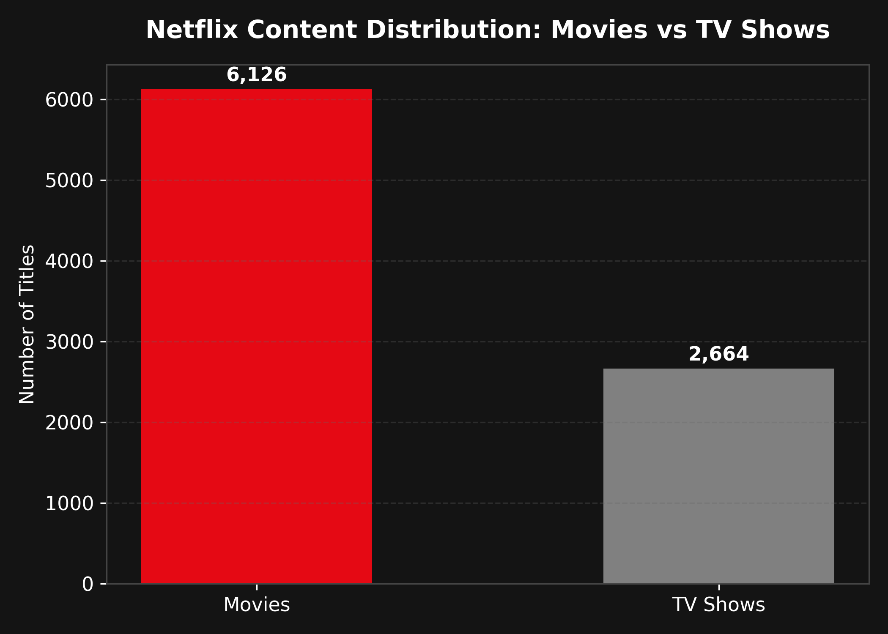
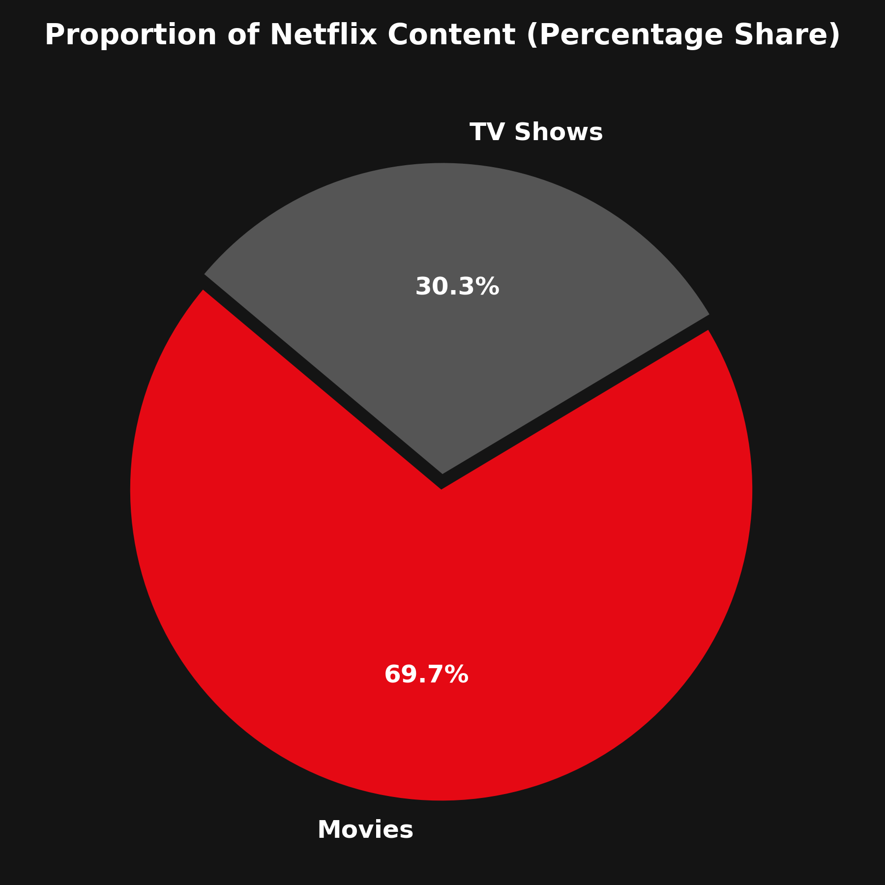

Project Overview
Scope, analytical objectives, and data processing methodology.
🎯 Core Objective
Quantify and compare the distribution of standalone Movies versus episodic TV Shows in the Netflix library to understand content strategy and audience entertainment formats.
⚙️ Tech Stack
Implemented in beginner-friendly Python using pandas.Series.value_counts(), Matplotlib for exported graphics, and Chart.js for web visualizations.
📁 Dataset Source
Utilizes verified records from the cleaned Netflix dataset (8,790 catalog titles) without any synthetic or fabricated values.
Key Statistics
Computed counts, percentage shares, and format proportions.
Content Distribution Visualizations
Interactive web charts alongside Python-generated Matplotlib exports.
Absolute Content Volume (Bar Chart)
Python Matplotlib Export: output/content_type_bar_chart.png

Percentage Proportion Share (Pie / Donut)
Python Matplotlib Export: output/content_type_pie_chart.png

Format Comparison
Detailed comparative metrics between Movies and TV Shows.
| Content Format | Total Count | Percentage Share | Primary Unit | Average Consumption Pattern |
|---|---|---|---|---|
| Movie | 6,126 | 69.69% | Minutes (e.g. 90–120 min) | Single-session complete viewing |
| TV Show | 2,664 | 30.31% | Seasons / Episodes | Multi-day episodic engagement & user retention |
Key Findings
Analytical insights drawn directly from real dataset calculations.
Download Analysis Reports
Verified CSV outputs generated by Python Pandas.
Content Type Summary
Counts table listing absolute numbers for Movies and TV Shows.
Content Type Percentages
Percentage share table ready for presentations or documentation.